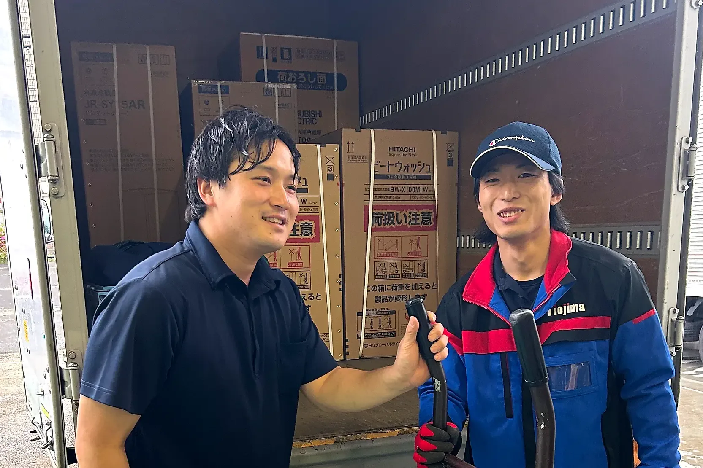
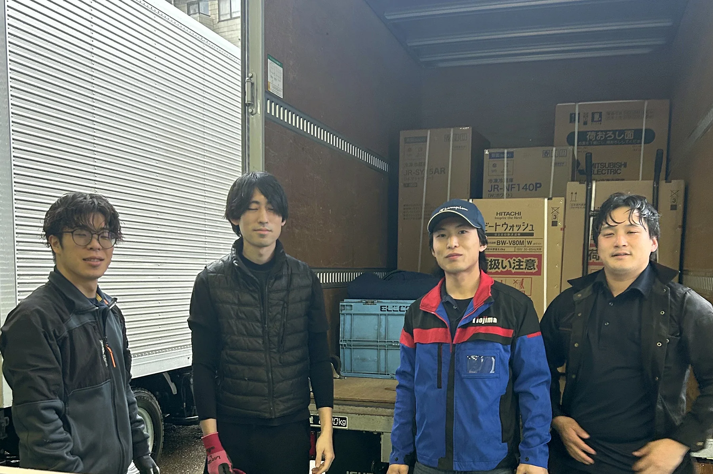

| 給与 | 月給350,000円 20日締め・当月末払い 賞与 年3回（7月・12月・3月） |
|---|---|
| 職種 | 4トントラックのドライバー（家電の配送・設置） |
| 募集人数 | 2名 |
| 仕事内容 | 4トントラックを運転して、家電量販店で購入された冷蔵庫・洗濯機・テレビ・エアコンをお客様のご自宅へお届けし、設置します。 いつも2人1組で伺います。配送で伺う範囲は東京・千葉・埼玉です。 |
| 対象 | 未経験の方も歓迎です 先輩と一緒に覚えていけます。 |
| 必要な免許 | 中型・準中型免許をお持ちの方は優遇します。 お持ちでない方も応募できます。入社してから取れます。 |
| 勤務地 | 埼玉営業所（埼玉県新座市野火止2-11-25・新座駅から車で10分） 地図は会社概要に |
| 勤務時間 | 8:00〜17:30（休憩1時間）／残業なし |
| 休日 | 週休2日制 土日に出られる方は優遇します |
| 昇給 | 随時（決まった時期はありません） 1年に2回上がる社員もいます |
| 待遇 | 社会保険完備／生命保険／家族手当／交通費支給（規定内）／制服貸与／遠方から引っ越して来る方には、引越し費用を支援します |
| 契約期間 | 期間の定めなし（正社員） |
| 試用期間 | なし |
| 変更の範囲 | 就業場所：変更なし（埼玉営業所と浦安本社の間の異動はありません） |
| 加入保険 | 健康保険・厚生年金・雇用保険・労災保険 |
| 受動喫煙対策 | 事務所・トラックの車内ともに禁煙 |
この募集要項の最終更新：
※勤務時間・シフト・支払いの条件は、時期によって変わることがあります。
この求人のポイント
月給35万円の正社員です。賞与は年3回。トラックを戻して報告したら、その日の仕事は終わりです（残業なし）。
免許は入社してからでも大丈夫です。中型・準中型免許をお持ちの方は優遇します。
土日に出られる方は優遇します。休日は週休2日制です。
仕事の様子


埼玉営業所（埼玉県新座市）
新座市野火止2-11-25。新座駅から車で10分です。社員8人が働いています。
埼玉営業所と浦安本社の間の異動はありません。地図は会社概要（拠点の地図）にあります。
埼玉営業所ではエアコン工事スタッフも募集しています。浦安本社の求人は正社員（浦安）・アルバイト（浦安）です。
応募の前に、話を聞くだけでも大丈夫です。
履歴書はいりません。私服で大丈夫です。公式LINEからそのままご連絡ください。LINEはいつでも送れます（夜や休みの日も大丈夫です）。
履歴書はいりません。私服で大丈夫です。公式LINEからそのままご連絡ください。LINEはいつでも送れます（夜や休みの日も大丈夫です）。